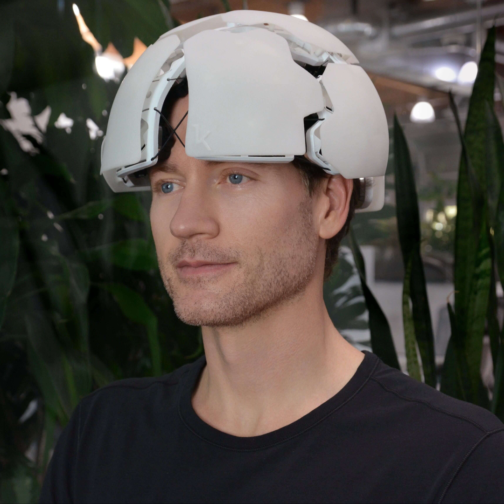
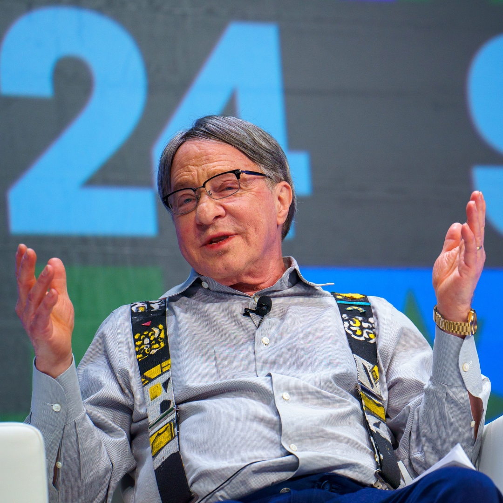
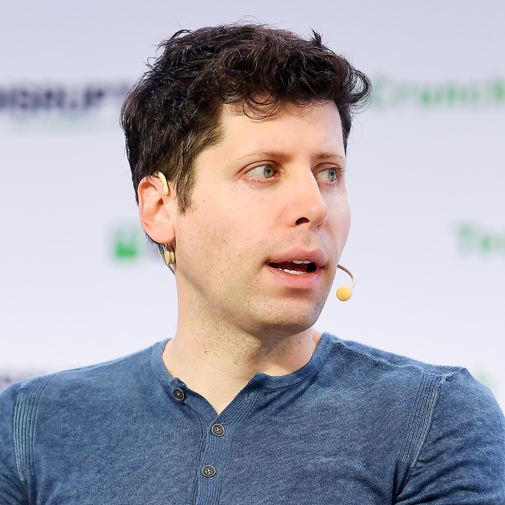
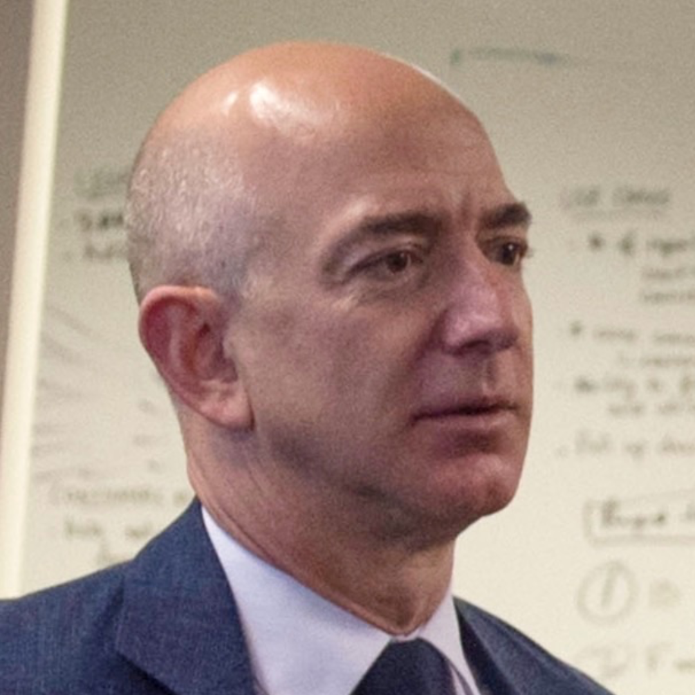

Bryan Johnson

Started off as a tech entrepreneur, progressed into an immortality-obsessed researcher. Spending $2 million a year on Project Blueprint, a team of 30+ doctors monitor hundreds of biomarkers through MRIs, CT scans and blood panels. From taking over 100 pills a day to swapping blood with his 17-year-old son, his exact caloric intake is planned out and documented publicly.
Johnson calls himself the most measured human alive, going to bed at the same time every night, eating exactly 1,977 calories, every organ in his body is monitored individually. Some note that most of his measurable improvements likely come from sleep, diet and exercise; basics that cost under $100 a month.
Regardless, Johnson claims to have reversed his biological age by over 5 years.
Ray Kurzweil

Kurzweil is a former Google engineer and futurist, he has predicted immortality by 2030 through nanobots that will repair the human body at a cellular level and by 2045 predicts the singularity; where brains and AI will merge. Kurzweil takes roughly 100 supplements per day with his prediction track record remaining around 86% accurate, once predicting portable computers and computers beating chess champions in the early 2000s. He doesn't run experiments or fund research but he has spent his career publicly stating that death is a solvable engineering problem and that the solution will arrive in time for him personally.
Sam Altman

CEO of OpenAI has personally invested $180 million of his own money into Retro Biosciences. Their mission is to add 10 healthy years onto the lifespan of humans through cellular reprogramming and autophagy by using OpenAI's models to accelerate their research. The first human trial is currently underway. Sam Altman has also paid a $10,000 deposit to join a waiting list on a company called Nectome, a brain preservation startup. Altman has publicly said he assumes his brain will be uploaded to the cloud.
Altman is betting on two paths simultaneously.
Jeff Bezos

The richest man in modern history, Jeff Bezos needs no introduction. Bezos backed Altos Labs with $3 billion at launch in 2022, making them the most heavily funded biotech startup in history. The company tests cellular reprogramming therapies on organs removed from bodies and kept alive on machines. Four years in, they have no human clinical data. Bezos has also invested in other biotech companies such as Unity Biotechnology. He's not making public predictions or routines but rather, private funding for the hope of escaping death.